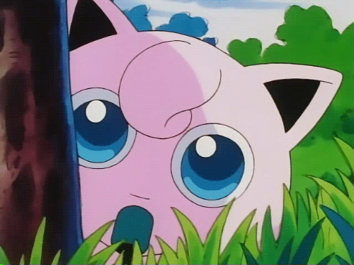

<!DOCTYPE html>

<html lang= "en>

<head>
    <meta charset= "UTF-8" />
    <title>Song of JigglyPuff</title>
<style>
    h1{
        text-align: center;
        margin-top: 40px;
        font-family: 'Gill Sans', 'Gill Sans MT', 'Calibri', Trebuchet MS, sans-serif;
        color: blueviolet;
        font-weight: bold;
    }
    pre {
        color: darkslateblue;
        font-size: large;
        text-align: center;
        font-weight: bold;
    }
</style>
<body>
    <h1>Song of JigglyPuff</h1><br/>
    <div style="text-align:center;"></div><br/>
    <pre>
    Jigglypuff, Jiggly, yy-puff, puff
    Jigglypuff, Jiggly
    Anytime, anyplace, anywhere
    With trouble brewing or
    Laughter in the air
    With a smile, with a sigh
    With all the right stuff
    There are so many times when the
    Song is just enough
    Magical powers in the lush grass
    In the shade of Mt. Moon
    Make the song
    Soothe you
    (Jigglypuff, Jiggly, yy-puff)
    The power of the melody moves you
    Jigglypuff, Jiggly, Jiggly!
    When it all seems lost, out of control
    When the struggle breaks down and
    Fear takes its toll
    You can count on a friend who's
    Just tough enough
    And the song that's alive in the heart
    Of Jigglypuff
    Hours and hours
    In the lush grass at the base
    Of Mt. Moon
    Make the song
    Soothe you
    (Jigglypuff, Jiggly, yy-puff)
    The power of the melody moves you
    The sing attack grooves you
    (Jigglypuff, Jiggly)
    The power of the melody moves you
    Jiggly!
    Jigglypuff, Jiggly, yy-puff
    Jigglypuff, Jiggly
    Defense curl, think again
    Pound hard, you'll never win
    Double slap, that's nothin' new
    Double edge, you're bound to lose
    Body slam, it's all wrong
    The real power's in the song
    Anytime, anyplace, anywhere
    With trouble brewing or
    Laughter in the air
    You can count on a friend
    Who's just tough enough
    And the song that's alive
    In the heart of Jigglypuff
    Magical powers
    In the lush grass
    In the shade of Mt. Moon
    Make the song, woo you
    The song
    (Jigglypuff, Jiggly, yy-puff)
    Soothe you
    The power of the melody moves you
    The sing attack grooves you
    (Jigglypuff, Jiggly)
    The power of the melody moves you
    Jigglypuff!
    Jigglypuff, Jiggly, yy-puff
    The power of the melody moves you
    (Jigglypuff, Jiggly)
    The sing attack grooves you
    The power of the melody moves you
    (Jigglypuff, Jiggly, yy-puff)
    The power of the melody moves you
    (Jigglypuff, Jiggly)
    The power of the melody moves you
    (Jigglypuff, Jiggly, yy-puff)
    The power of the melody moves you
    (Jigglypuff, Jiggly)
    Jigglypuff
    </pre>

</body>
</head>

